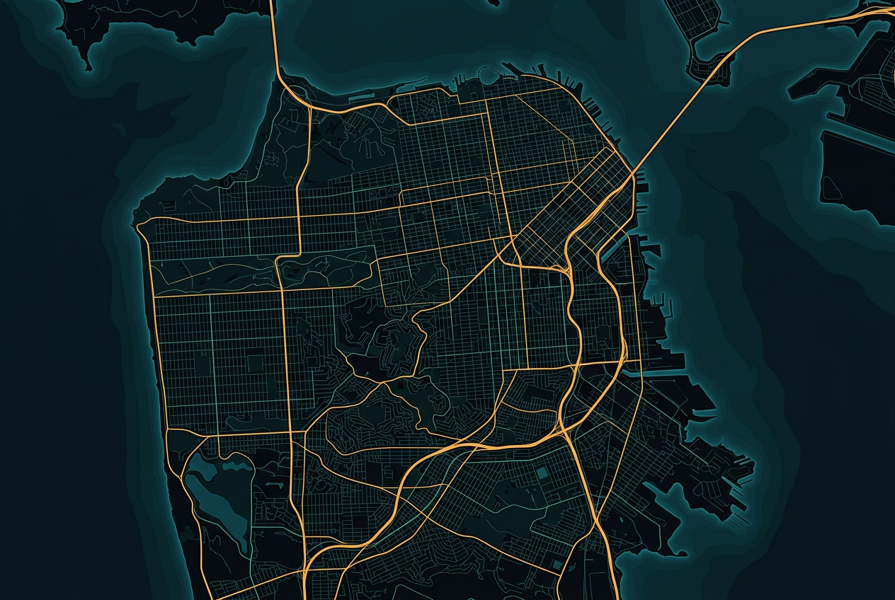

Was in der Stadt passiert
Neuigkeiten, Mitteilungen des Bürgermeisters, Stadt-News, Polizeimeldungen und Event-Highlights – immer auf dem neuesten Stand.
Erlebe die Highlights
Von Street Races bis zum Angelturnier – hier findest du die kommenden Veranstaltungen in Los Santos.
Die interaktive Karte
Wähle eine Kategorie und finde die wichtigsten Anlaufstellen der Stadt – mit Beschreibung, Standort und Öffnungszeiten.
Kategorien

Finde deinen Beruf
Ob als Einsteiger oder Profi – in Los Santos gibt es für jeden den passenden Job. Schwierigkeit, Verdienst und Anfänger-Empfehlung auf einen Blick.
Mobil durch Los Santos
Das Liniennetz aus Bussen und Straßenbahnen bringt dich schnell und günstig ans Ziel. Hier findest du Linien, Haltestellen und Beispiel-Abfahrtszeiten.
Orte, die du gesehen haben musst
Vom legendären Vinewood Sign bis zum Galileo Observatory – die ikonischsten Plätze der Stadt.
Spaß für jeden Tag
Langweilig wird es nie: Bowling, Casino, Clubs, Paintball und vieles mehr warten auf dich.
Die Wirtschaft der Stadt
Restaurants, Werkstätten, Autohäuser und mehr – betrieben von der Community für die Community.
Deine ersten Schritte
Neu in Los Santos? Folge dieser Schritt-für-Schritt-Anleitung und starte sorgenfrei in dein neues Leben.
Häufige Fragen
Los Santos in Bildern
Impressionen und Community-Momente aus der ganzen Stadt.